Bản mẫu 7: nền động, thẻ kính mờ, trọng tâm phát sáng
Thêm một lớp nền động phía sau toàn bộ màn hình: đậm ở phần đầu màn, nhạt dần xuống vùng bảng và số liệu để vẫn dễ đọc. Các thẻ chuyển sang kính mờ (nền trắng 80%, làm mờ phía sau) nên nền động lộ ra mềm qua mọi thẻ. Có 5 kiểu nền và 3 kiểu điểm nhấn để Sếp phối và chọn; đổi trực tiếp bằng thanh ở góc dưới bên phải mỗi màn.
1. Năm kiểu nền động
Ảnh chỉ là một khung hình; mở màn để thấy chuyển động thật (rê chuột để thấy nền phản ứng).
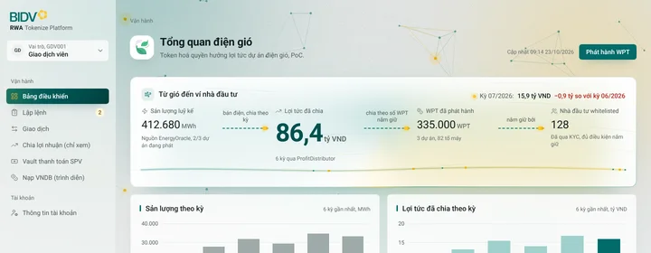
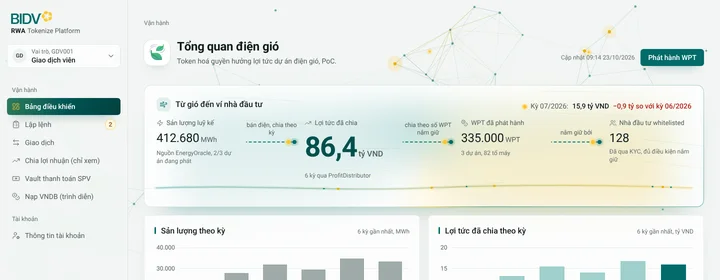
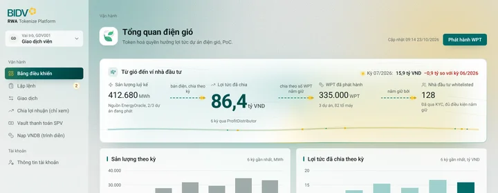
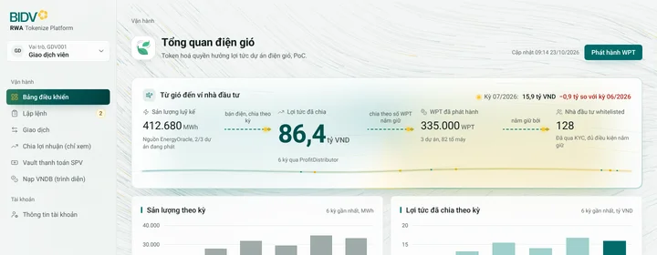
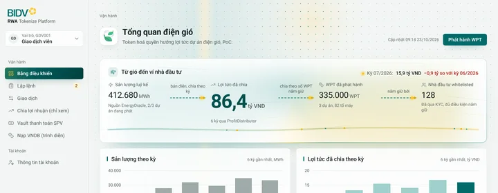
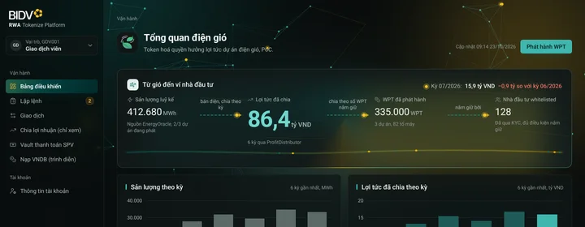
2. Ba kiểu điểm nhấn cho khối trọng tâm
Cùng nội dung, cùng thẻ trắng; chỉ khác cách làm khối trọng tâm nổi lên. Mở một màn rồi bấm thanh "Kiểu điểm nhấn" ở góc dưới bên phải để xem chuyển động thật.
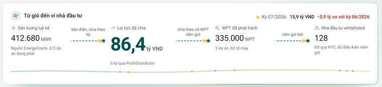
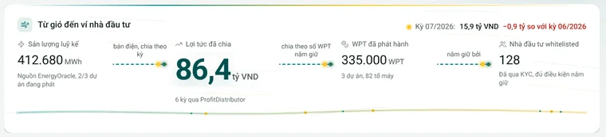
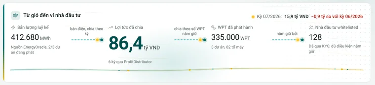
3. Ba màn đại diện
Bấm để mở bản chạy được. Thử: rê chuột trên menu trái và trên khối trọng tâm, bấm nút, đổi sáng tối ở cuối thanh bên, cuộn để thấy các khối lướt vào.
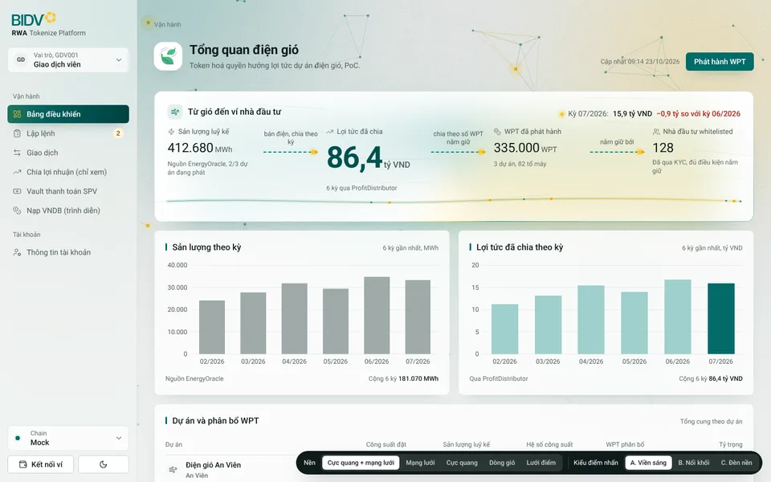
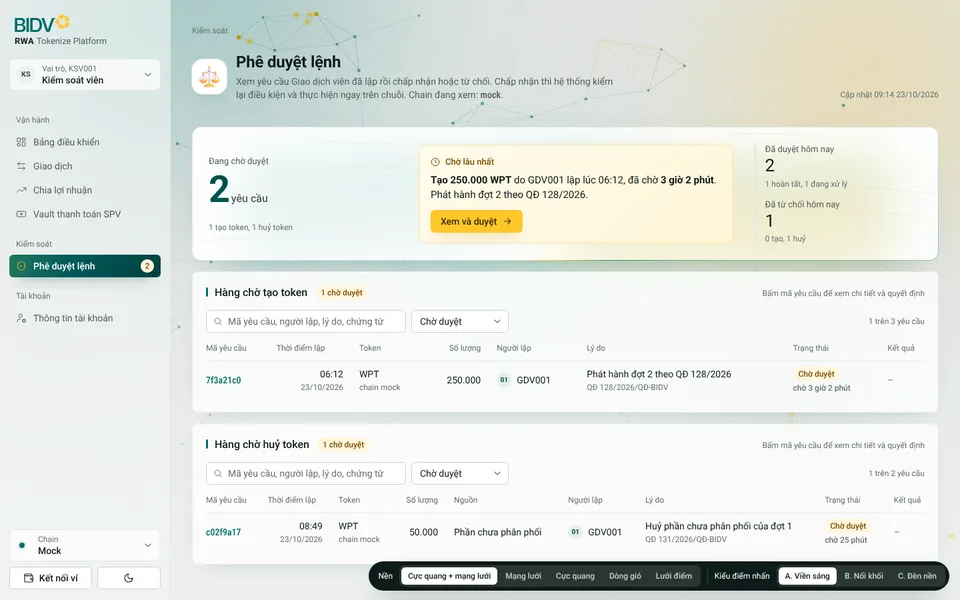
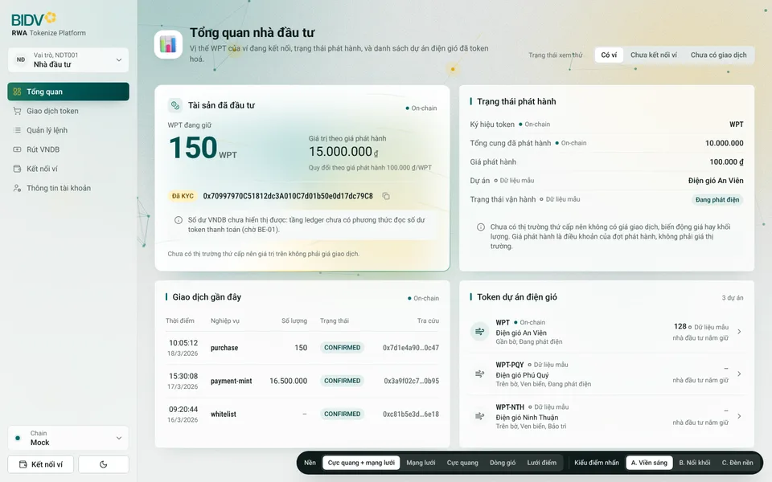
4. Logo đã chốt
A cho trang giới thiệu, tài liệu, slide; C cho ứng dụng. Logo BIDV vector hoá tạm từ ảnh Sếp gửi, thay bằng SVG chính thức khi có.

Dùng ở đâu
- A: trang giới thiệu, tài liệu, slide.
- C: thanh bên ứng dụng (bản mẫu 7 đang dùng), thanh trên điện thoại.
- C ở cỡ biểu tượng: favicon, thanh thu gọn, biểu tượng ứng dụng di động. Dưới 40 px chỉ còn bông mai trên ô xanh ngọc; từ 40 px có thêm chữ RWA (Sếp đã đồng ý).
- B: không dùng.
5. Hiệu ứng giữ từ bản 3
Cơn gió quét khi mở trang; tiêu đề hiện từng từ; biểu tượng 3D nảy ra; khối trọng tâm mở từ trái sang; các khối khác lướt lên theo hướng gió, dòng bảng hiện lần lượt; số lăn như đồng hồ; cột biểu đồ mọc bằng lò xo; viên nang menu kéo giãn và trượt sang mục mới khi đổi trang; ánh sáng theo chuột trên thẻ; thẻ nhấc lên khi rê; nút chính hút nhẹ theo con trỏ, nhún và gợn sóng khi bấm; icon vẽ lại nét; đổi sáng tối bằng vòng tròn lan. Mọi chuyển động chạy bằng đường cong lò xo, tắt hết khi người dùng bật "giảm chuyển động".
Bản mẫu tĩnh để duyệt giao diện, dữ liệu mẫu, không có chức năng thật. Icon 3D Fluent Emoji (MIT), logo BIDV vector hoá tạm từ ảnh chủ dự án gửi.